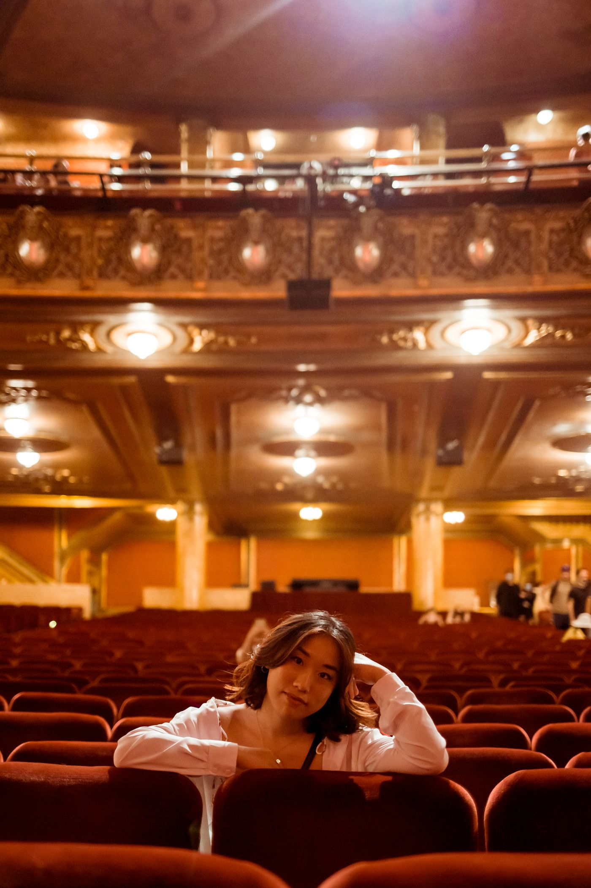

Ночь, которую нельзя ускорить
Режиссёр Вера Анисимова записала первую сцену после поездки к северному маяку. Её заинтересовало не само море, а привычка смотрителей оставлять лампу гореть, даже когда вокруг нет ни одного корабля. Так появился образ дома, который ждёт людей дольше, чем они готовы его помнить.
Вместо большой семейной хроники команда выбрала одну ночь и двух героев. Андрей хочет закончить дела до утреннего автобуса, Лида намеренно медлит. Их спор строится вокруг простых предметов: ключа, плаща, жестяной кружки и неотправленного письма.